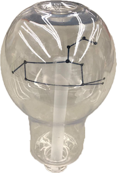

商品概要
毎日寝る前に部屋の電灯を消して横になった時星が見えるように星座が輝いてたら照明を見て心の安心
PROCESS
< 4月12日 >
材料 - 紙コップ、箸一本、ちょっと厚い紙、ペン、ハサミ、テープ
時間 - 10分〜15分
透明な丸い筒に星座を描いて入れたかったが透明材料が何もなくて紙コップ取り替えって作った。
中が見えるように作りたかったので紙コップの前の部分を切った。
ちょっと厚い紙に私の星座である獅子座を描いた。(これは人それぞれ違うからオーダーメードだ)
箸一本を紙コップの長さに合わせて切った。獅子座の絵を切っておいた箸に貼った。
IMAGE

< 4月17日 >
材料 - candoで買った電球形のタンブラー、TAKE OUT用プラスチックコップ、ストロー、ペン、ボンド、テープ
時間 - 30分〜40分
TAKE OUT用プラスチックコップを電球形のタンブラーの中に入れるように小さいサイズで切った。
切ったプラスチックの上にペンで星座を描く。
TAKE OUT用プラスチックコップの長さに合わせてストローを切る。
切ったストローの上の部分に描いた星座をボンドで貼ったが、思ったより強くなかったのでテープでもう一回貼った。
星座が貼っているストローを電球形のタンブラーの中に気をつけって入る。
電球形のタンブラーを逆にしてストローの終わる部分とタンブラーの入り口の部分をボンドで貼る。
ボンドが乾くまで待ったら終わり。
IMAGE

< 5月30日 >
材料 - ワイヤー、LEDワイヤー、石鹸、ペンチ、ボンド、乾電池
時間 - 2時間〜3時間
ワイヤが薄くて二列を縒って長いワイヤーを準備する。
順序通りに長さを切りながら獅子の頭の形を作って胴体、尻尾、脚を作ってくれる。(角がよくつかむこと)
LEDワイヤー電球を角に合わせて巻いてくれる。頂点をよくあわせる。
下に台に差し込む橋も二つを作る。
いいにおいがしたいので,下のほうに石けんを用意した。
石鹸に挿す前に石鹸が見えないように布で包んでくれる。
差し入れのところに溝を掘り、ワイヤーを差し込む。
完成
IMAGE
< 5月30日 >
材料 - アクリル5mm、LEDテープ、MDFボード2mm、ボンド
時間 - 3時間〜4時間
アクリルに新しい道のデータをイラストレーターにする。
下にケースのデータも作る。
アクリルとMDFボードをレーザーカーティング機でカッティングする。
MDFボードを組み立ててボンドに貼り付ける。
ケースの上面はアクリルが入れるように大きさを測って切る。
ケースの中は高さを合わせ,中にLEDテープを付ける。
アクリルを差し込めば完成
IMAGE
< 完成>
アクリルをもう一回作って形を直った。四角の形になって形がもっと綺麗に見えるように作った。
IMAGE
< CASE HISTORY>